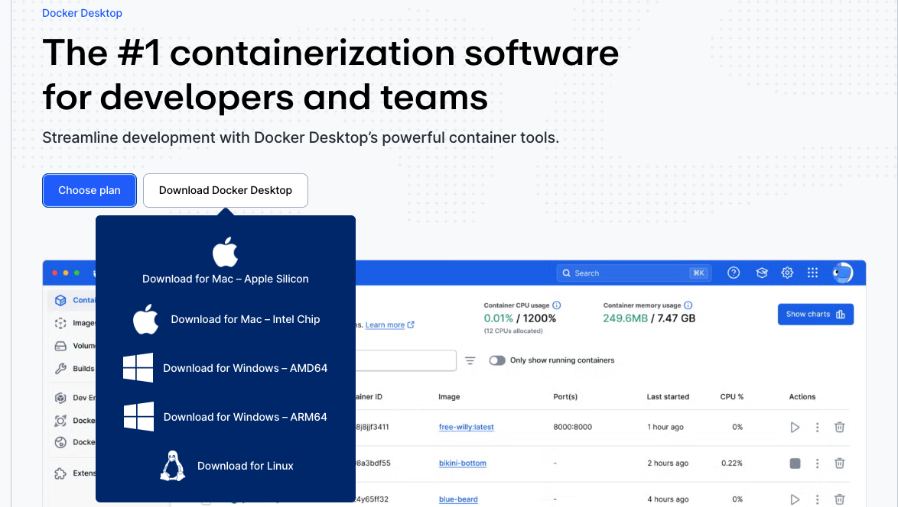
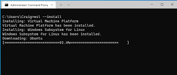

flowchart LR
A[Source Code] --> B[Dockerfile]
B --> C[Docker Image]
C --> D[Docker Container]
D --> E[Application Running]
Introduction to Docker
Installation, Basic Commands
Docker
Microservices
docker-compose
Dockerfile
Installation
Download
Download Docker Desktop from the official website:
download link
Choose the installer for your operating system:
- Windows (Docker Desktop for Windows)
- macOS (Docker Desktop for Mac – Intel or Apple Silicon)

Windows Installation
Installation Steps
- Download Docker Desktop for Windows.
- Run the installer.
- During installation, ensure the following:
- Enable Use WSL 2 instead of Hyper-V (recommended)
- Allow required components to install (
WSL 2, Linux kernel updates)
- Restart the system if prompted.
Verify Installation
Open PowerShell or Command Prompt and run:
docker --versionThen verify Docker is running:
docker run hello-worldIf you see a “Hello from Docker!” message, the installation is successful.
Common Windows Issues
ImportantUpdate or Install
If Docker reports that WSL 2 is not installed:
Install WSL 2 manually:
wsl --installwsl --update
Restart your machine and try again.
If Docker fails to start, ensure:
- Virtualization is enabled in BIOS.
- WSL is enabled in Windows Features.
macOS Installation
Installation Steps
- Download Docker Desktop for macOS.
- Open the
.dmgfile. - Drag Docker.app into the Applications folder.
- Start Docker Desktop from Applications.
Verify Installation
Open Terminal and run:
docker --versionThen run:
docker run hello-worldIf the container runs successfully, Docker is installed correctly.
Post-Installation Setup
Increase Resource Limits (Optional but Recommended)
Open Docker Desktop → Settings → Resources, and adjust:
- CPU
- Memory
- Disk image size
For database-heavy workloads, set at least:
- 2 CPUs
- 4 GB RAM
Recommended Docker Tools
For Development
- Docker Compose (included in Docker Desktop)
- Dev Containers (VS Code extension)
- Docker CLI
For Container Management
docker statsdocker ps -adocker logs <container>docker exec -it <container> /bin/bash
We will go over these during live sessions.
Useful Images for the Course
postgres:17pgadmin:latestpython:3.13-slimjupyter/base-notebook
Dockerfile
A Dockerfile is a text file that describes how to build a Docker image.
You can think of it as a recipe for your application environment. It defines: - the base image, - the working directory, - the dependencies, - the files that should be copied, - and the command that starts the application.
Why do we need a Dockerfile?
Instead of saying “it works on my machine”, we define the environment in code so the application can run the same way on different machines and servers.
Common Dockerfile Instructions
The most common instructions are:
FROM— defines the base imageWORKDIR— sets the working directory inside the containerCOPY— copies files into the containerRUN— executes commands during image buildEXPOSE— documents the application portCMD— defines the startup command
Example 1 | Simple Python Application
FROM python:3.13-slim
WORKDIR /app
COPY requirements.txt .
RUN pip install --no-cache-dir -r requirements.txt
COPY . .
CMD ["python", "main.py"]What happens in this example?
Step by step:
FROM python:3.13-slimstarts from a lightweight Python imageWORKDIR /appcreates and uses/appas the working directoryCOPY requirements.txt .copies the dependency file into the imageRUN pip install ...installs Python packagesCOPY . .copies the application codeCMD [...]starts the application when the container runs
flowchart TD
A[FROM python:3.13-slim] --> B[WORKDIR /app]
B --> C[COPY requirements.txt]
C --> D[RUN pip install]
D --> E[COPY source code]
E --> F[CMD python main.py]
Example 2 | Streamlit Application
For our frontend, we may use Streamlit. A Dockerfile for the frontend could look like this:
FROM python:3.13-slim
WORKDIR /app
COPY pyproject.toml .
COPY uv.lock .
RUN pip install uv && uv sync
COPY . .
EXPOSE 8501
CMD ["uv", "run", "streamlit", "run", "main.py", "--server.address=0.0.0.0", "--server.port=8501"]Build the Docker Image
Run the following command in the folder where the Dockerfile is located:
docker build -t my-streamlit-app .Run the Container
docker run -p 8501:8501 my-streamlit-appThis means:
- port
8501on your machine - is mapped to port
8501inside the container
Docker Compose
Docker Compose is a tool for running multiple containers together using a single configuration file, usually called docker-compose.yml.
This is useful when a project has more than one service, for example:
- frontend,
- backend,
- database
- data modeling
- etc
Instead of starting every container manually, Docker Compose lets us manage the whole system in one place.
flowchart LR
A[docker-compose.yml] --> B[Frontend Container]
A --> C[Backend Container]
A --> D[PostgreSQL Container]
B <--> C
C <--> D
Why do we need Docker Compose?
Without Docker Compose, we would need to start every container manually and configure ports, networking, and environment variables by hand.
With Compose, one command can start the entire application stack:
docker compose upBasic Structure of a Compose File
A Compose file usually contains:
services— all containers we want to runbuildorimage— how each service is createdports— exposed portsvolumes— persistent or shared storageenvironment— environment variablesdepends_on— startup dependency order
Example 1 | Application and PostgreSQL
services:
app:
build: .
container_name: my_app
ports:
- "8501:8501"
depends_on:
- db
db:
image: postgres:17
container_name: my_postgres
environment:
POSTGRES_DB: ${DB_NAME}
POSTGRES_USER: ${DB_USER}
POSTGRES_PASSWORD: ${DB_PASSWORD}
ports:
- "5432:5432"
volumes:
- postgres_data:/var/lib/postgresql/data
volumes:
postgres_data:What happens in this example?
This file defines two services:
app:the main application containerdb:the PostgreSQL database container
The database stores its data in a Docker volume so the data is not lost when the container stops.
Example 2 | Frontend, Backend, and Database
This version is closer to the final course project architecture:
services:
frontend:
build: ./app/front # I have app folder which contains the whole product
container_name: frontend
ports:
- "8501:8501"
depends_on:
- backend
backend:
build: ./app/back
container_name: backend
ports:
- "8000:8000"
depends_on:
- db
environment:
DATABASE_URL: postgresql://postgres:postgres@db:5432/project_db
db:
image: postgres:17
container_name: db
restart: always
environment:
POSTGRES_DB: ${DB_NAME}
POSTGRES_USER: ${DB_USER}
POSTGRES_PASSWORD: ${DB_PASSWORD}
ports:
- "5432:5432"
volumes:
- postgres_data:/var/lib/postgresql/data
volumes:
postgres_data:flowchart TD
U[User] --> F[Frontend :8501]
F --> B[Backend :8000]
B --> P[PostgreSQL :5432]
Example 3 | Jupyter Notebook Server
A Jupyter Notebook server can also run inside a container. This is useful for data exploration, EDA, model prototyping, and team reproducibility.
A simple Dockerfile example:
FROM jupyter/base-notebook:latest
WORKDIR /home/jovyan/work
COPY . /home/jovyan/work
EXPOSE 8888
CMD ["start-notebook.sh", "--NotebookApp.token=''", "--NotebookApp.password=''"]What happens in this example?
Step by step:
FROM jupyter/base-notebook:lateststarts from the official Jupyter notebook imageWORKDIR /home/jovyan/worksets the working directoryCOPY . /home/jovyan/workcopies your notebooks and files into the containerEXPOSE 8888documents the notebook server portCMD [...]starts the Jupyter notebook server without a token or password for local development
flowchart TD
A[Dockerfile] --> B[Jupyter Image]
B --> C[Container Starts]
C --> D[Notebook Server on Port 8888]
D --> E[Open in Browser]
Build the Jupyter Image
docker build -t my-jupyter-server .Run the Jupyter Container
docker run -p 8888:8888 my-jupyter-serverThen open:
http://localhost:8888Jupyter Notebook Service in Docker Compose
A Jupyter Notebook server can also be added as one of the services in docker-compose.yml.
services:
notebook:
image: jupyter/base-notebook:latest
container_name: notebook
ports:
- "8888:8888"
volumes:
- ./notebooks:/home/jovyan/work
working_dir: /home/jovyan/work
command: start-notebook.sh --NotebookApp.token='' --NotebookApp.password=''What happens in this Compose example?
This file defines a notebook service that:
- starts a Jupyter Notebook server
- maps port
8888to your local machine - mounts the local
./notebooksfolder into the container - allows you to edit notebooks locally while running them inside Docker
flowchart LR
A[Local notebooks folder] --> B[Jupyter Container]
B --> C[Notebook Server :8888]
C --> D[Browser]
Example 4 | Jupyter with PostgreSQL in Docker Compose
A more practical version for the course project is to run Jupyter together with PostgreSQL.
services:
notebook:
image: jupyter/base-notebook:latest
container_name: notebook
ports:
- "8888:8888"
volumes:
- ./notebooks:/home/jovyan/work
working_dir: /home/jovyan/work
command: start-notebook.sh --NotebookApp.token='' --NotebookApp.password=''
depends_on:
- db
db:
image: postgres:17
container_name: postgres_db
restart: always
environment:
POSTGRES_DB: ${DB_NAME}
POSTGRES_USER: ${DB_USER}
POSTGRES_PASSWORD: ${DB_PASSWORD}
ports:
- "5432:5432"
volumes:
- postgres_data:/var/lib/postgresql/data
volumes:
postgres_data:flowchart TD
U[User] --> J[Jupyter Notebook :8888]
J --> P[PostgreSQL :5432]
A Jupyter container is helpful when the team wants to work on:
- exploratory data analysis
- feature engineering
- Bayesian simulations
- quick experiments before moving code into the backend or frontend
Useful Docker Compose Commands
Common commands include:
docker compose up— start all servicesdocker compose up -d— start all services in detached modedocker compose down— stop and remove servicesdocker compose up --build— rebuild images and start servicesdocker compose ps— list running servicesdocker compose logs— show logs for services
Command Examples
Start all services:
docker compose upStart in detached mode:
docker compose up -dStop all services:
docker compose downRebuild and start again:
docker compose up --buildShow active services:
docker compose psShow logs:
docker compose logsDocker Compose helps us manage these services as one connected system, which is an important step toward microservice-based development and deployment.
Understanding Volumes
A volume is a way to store data outside the container itself.
This is important because containers are usually ephemeral. If a container is removed, its internal data can disappear. Volumes solve this by keeping the data in persistent storage managed by Docker.
flowchart LR
A[Container] --> B[Writes Data]
B --> C[Docker Volume]
C --> D[Data Persists Even if Container is Removed]
Why do we need volumes?
Without a volume:
- files created inside the container may be lost when the container stops or is deleted
- database data may disappear
- notebook work may not be saved outside the container
With a volume:
- data survives container restarts
- data can be reused by new containers
- local folders can be connected to containers for live development
Two common volume patterns
There are two common ways to use volumes in Docker Compose:
named volumesbind mounts
Named Volumes
A named volume is managed by Docker.
Example:
services:
db:
image: postgres:17
volumes:
- postgres_data:/var/lib/postgresql/data
volumes:
postgres_data:In this example:
postgres_datais the Docker-managed volume name/var/lib/postgresql/datais the folder inside the PostgreSQL container where database files are stored
This means PostgreSQL writes its data into postgres_data, so even if the container is removed and recreated, the database files can still remain.
flowchart TD
A[PostgreSQL Container] --> B[/var/lib/postgresql/data]
B --> C[Named Volume: postgres_data]
C --> D[Persistent Database Files]
Bind Mounts
A bind mount connects a local folder on your machine to a folder inside the container.
Example:
services:
notebook:
image: jupyter/base-notebook:latest
volumes:
- ./notebooks:/home/jovyan/workIn this example:
./notebooksis the folder on your machine/home/jovyan/workis the folder inside the container
This means:
- files created in Jupyter appear in your local
notebooksfolder - if you edit files locally, the container sees those changes too
flowchart LR
A[Local Folder ./notebooks] <--> B[Jupyter Container]
B --> C[/home/jovyan/work]
Volume syntax
The general syntax is:
volumes:
- source:targetWhere:
sourcecan be a named volume or a local foldertargetis the path inside the container
Example | PostgreSQL Volume
services:
db:
image: postgres:17
environment:
POSTGRES_DB: project_db
POSTGRES_USER: postgres
POSTGRES_PASSWORD: postgres
volumes:
- postgres_data:/var/lib/postgresql/data
volumes:
postgres_data:Why this matters:
- PostgreSQL stores its internal files in
/var/lib/postgresql/data - if we do not attach a volume, database data may be lost
- with the volume, the data is persistent
Example: Jupyter Notebook Volume
services:
notebook:
image: jupyter/base-notebook:latest
ports:
- "8888:8888"
volumes:
- ./notebooks:/home/jovyan/work
working_dir: /home/jovyan/work
command: start-notebook.sh --NotebookApp.token='' --NotebookApp.password=''Why this matters:
- notebooks created in the container are saved in the local
./notebooksfolder - the work is easier to version-control with Git
- the files remain available even if the container is rebuilt
Example: Frontend Source Code Volume
During development, we sometimes mount the application folder into the container:
services:
frontend:
build: ./app/front
ports:
- "8501:8501"
volumes:
- ./app/front:/appThis means:
- your local source code is linked to
/appinside the container - code changes on your machine become visible inside the container
- this is useful for faster development
Important
PAY ATTENTION TO THE PATHS
Named Volume vs Bind Mount
A simple rule of thumb:
- use named volumes for databases and persistent service data
- use bind mounts for source code, notebooks, and local development files
What happens if we remove a container?
If a container is deleted:
- data stored only inside the container is lost
- data stored in a volume can remain
That is why volumes are especially important for:
- PostgreSQL
- Jupyter notebooks
- uploaded files
- model artifacts
- logs
Check existing volumes
You can list Docker volumes with:
docker volume lsInspect a specific volume with:
docker volume inspect postgres_dataRemove an unused volume with:
docker volume rm postgres_dataWhy volumes matter for our project
In our course project, volumes will likely be used for:
- PostgreSQL data persistence
- Jupyter notebook development
- possible shared data folders
- saving files even when containers are rebuilt
Important
Without volumes, restarting containers would make development much harder and risk losing important project data.s